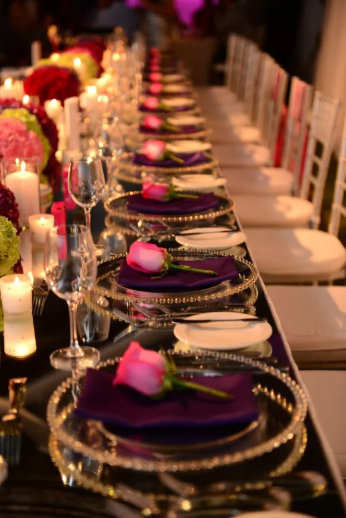

Seer Varisai Plates Decoration in Madurai — Traditional Tamil Wedding Seer Setup
Looking for elegant Seer Varisai plates decoration in Madurai for your wedding or engagement ceremony? Sparkle Heaven provides beautifully arranged and traditionally styled seer plates designed according to Tamil wedding customs.
Proper symmetry, color coordination, and cultural authenticity.
Traditional Seer Varisai Plates Decoration
Seer Varisai is an important part of Tamil marriage traditions, where gifts, fruits, sweets, sarees, and ceremonial items are presented in decorated plates.
Our seer varisai plates decoration in Madurai follows proper Tamil wedding customs. We focus on:
Types of Seer Plates We Decorate
Fruit Seer Plates
Arranged in layered style with decorative flowers and fabric lining.
Sweet & Dry Fruit Plates
Neatly wrapped and arranged with matching color themes.
Pooja Item Plates
Traditional arrangement with kumkum, turmeric, coconut, and diya placement.
Saree & Dress Seer Plates
Elegant folding style with floral border decoration.
Jewellery Seer Tray
Decorative base setup with soft fabric and flower outlining.
Theme-Based Decoration
We offer theme-based arrangements such as:
- Traditional red & gold theme
- Yellow and green temple-style
- Pastel wedding theme
- Floral-themed seer arrangement
- ✔ Minimal and elegant white theme
We coordinate plate decoration with your wedding stage decoration and overall color palette.
Materials Used for Decoration
To maintain elegance and durability, we use:
- ✔ Decorative trays
- ✔ Lace and net fabrics
- ✔ Artificial or fresh flowers
- ✔ Satin ribbons
- ✔ Traditional embellishments
- ✔ Wooden or metal base plates
All materials are arranged neatly without overcrowding the plate.
Why Proper Seer Arrangement Matters
In Tamil weddings, Seer Varisai reflects:
Well-decorated seer plates enhance the visual beauty of the ceremony and look stunning in photographs.
Suitable for All Functions
Our seer varisai plates decoration is suitable for:
We deliver and arrange the plates at the venue before the ceremony begins.
Why Choose Sparkle Heaven?
Families choose us for seer varisai decoration because:
- Understanding of Tamil traditions
- Neat and symmetrical arrangement
- Customizable color themes
- On-time setup
- Professional finishing
We treat every seer setup with care and cultural respect.
Frequently Asked Questions
Do you provide complete seer varisai plates decoration in Madurai?
Yes, we handle full seer plate arrangement and decoration for weddings and engagements.
Can we customize the color theme?
Yes, we customize decoration according to wedding theme and saree colors.
Do you arrange plates at the venue?
Yes, we deliver and arrange the plates neatly before the ceremony.
Do you use fresh flowers?
Both fresh and artificial flower options are available based on preference.